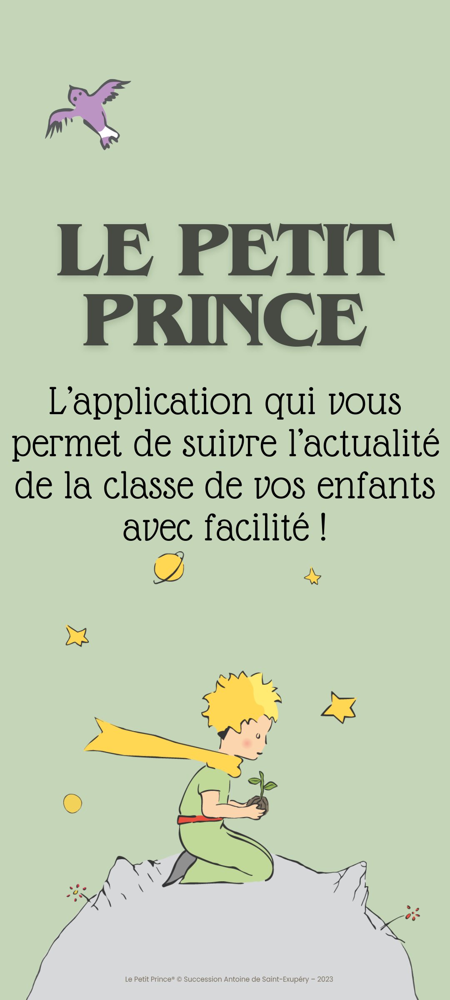
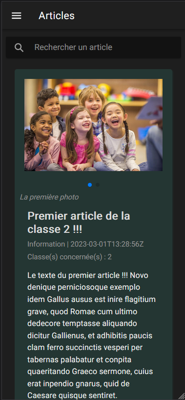
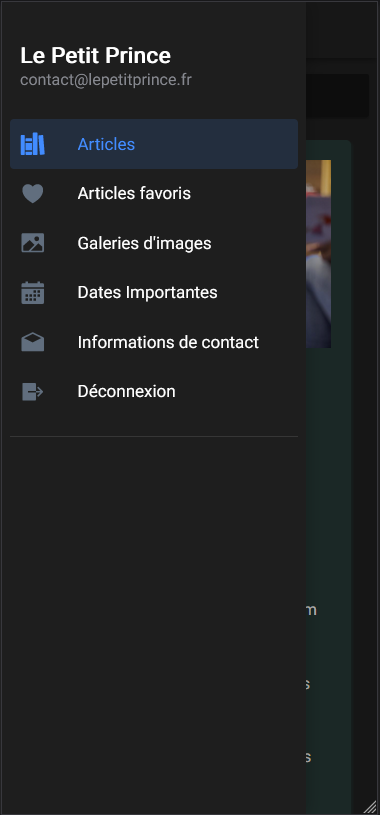
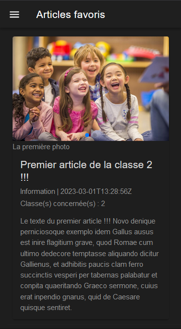
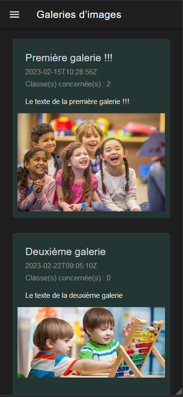
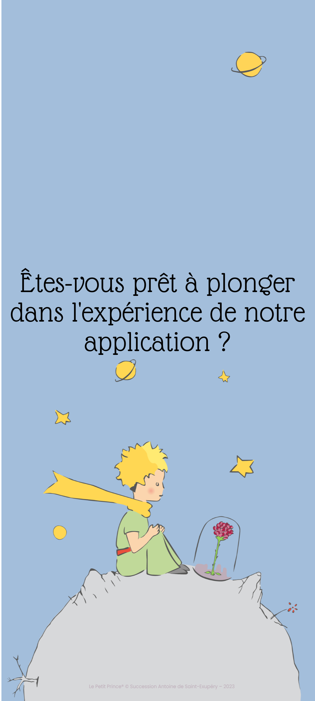

Comment utiliser Le Petit Prince ?Tutoriel

Glisser de droite à gauche pour voir les différentes étapes du tutoriel.

Une fois connecté, vous atterrissez sur la page d'accueil qui est celle
des articles. Vous pouvez défiler les photos des articles en glissant
votre doigt de droite à gauche ou encore ajouter des articles en
favoris.

L’application propose un menu latéral qui vous permet d’accéder à
différentes fonctionnalités.

Vous pouvez consulter les articles que vous avez ajoutés en favoris.

Ou encore accéder à la galerie d’images.
